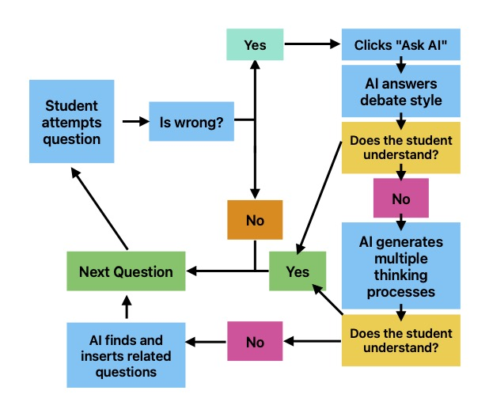

Use AI for efficient studying
Scoring 1400 on my first SAT taught me a brutal truth: grinding practice tests isn’t enough. You need a mirror for your mistakes—something to reflect exactly where your logic breaks down. Existing tools couldn’t do this, so I built an AI tutor that dissects errors like a human would.
The Problem: Why Practice Volume Isn’t Enough
Studying for the SAT isn’t about grinding more questions—it’s about grinding the right ones. After scoring 1400 despite hours on generic practice tests, I realized my mistake: no tool could pinpoint my weak areas or adapt to my mistakes. Existing platforms offered volume, not insight.
That's where generative AI changes the game. Unlike static explanations, AI can simulate a tutor: dissecting your mistakes, generating counterarguments, and surfacing patterns in your misunderstandings.
As a student who wasn't particularly interested in the SAT, I spent countless hours trying different tools and techniques. My friend would tell me to take one practice test every two weeks. I joined discord servers and asked about questions that I got wrong so I could learn from my mistakes. In order to improve my English score, some would suggest memorizing vocabulary, others would say memorize latin roots. Some would say read the New York Times. It was in mutual agreement, however, that a large portion of the solution lay in solving countless SAT problems.
And in the weeks leading up to the October SAT, I spent every morning grinding out questions from the CollegeBoard Question Bank. On the day of the SAT itself, I gave each problem my full focus and attempted to solve them. A couple days later, I check my score and see that I got a 1400, which isn't a terrible score, but I was aiming for much higher. And to my surprise, I missed studying in several key areas which I assumed were easy enough for me to understand. The problem wasn't that I didn't know how to answer the vast majority of questions, rather it was a lack of practice with several key SAT topics. And when I started studying for the second time, I practiced everything on KhanAcademy until I consistently got 100% in each category.
At around the same time, I formed my team and started working on aquarc. For a long time, we assumed that the problem was the low volume of questions for the digital SAT, and we released aquarc as a question bank alternative that was easier to use. At the beginning we focused on amassing as many questions as possible, but we were soon forced to confront that we weren't solving the real problem people like me were facing.
In fact, we were far from it.
How AI Bridges the Gap
Looking into paid services like Rtest and Acely, it occured to me that the value proposition that got these companies paying customers was not the volume of questions, but being able to intelligently understand a user's struggle points based on particular questions. And aquarc implemeneted a login infrastructure and analytics on what questions you were getting wrong, but it was still not enough.
As an SAT studier myself, I would frequently paste my questions into a Generative AI model and ask the model to walk me through to the solution. I was intrigued, wondering that there had to be a more efficient way. I read this paper on prompts to study with and used these prompts in Gemini. It worked better, bbut still wasn't good enough.
After completing the Google Generative AI Course, I've identified and researched particular solutions to this problem.

- Debate style analysis: To truly understand how to improve, a user needs to understand why their answer is wrong and why the correct answer is correct. The debate style prompt first asks for the user's rationale, then constructs a potential thinking process leading to the incorrect answer and counteracts it with the right answer. This prompt will save significant time, because that's what most of the question deconstruction is supposed to do anyway.
- Alternative Approaches: If the "debate" doesn't answer the user's questions, they are free to talk to the agent further but they can also generate mutiple alternative thinking processes that lead to the user's answer and the correct answer. To look at multiple ways of thinking about the same problem is an effective strategy to understand the thought processes the SAT models.
- Semantically Similar questions: Not all questions are similar, even if they are from the same skill and difficulty. For example, scientific analysis questions (no matter the inherent skill being tested) poses a challenge to many of my peers and students, making the semantic similarity finder between questions even more important.
Building the Tutor: Prompts, Vectors, and Tradeoffs
For the first version of this agent, I decided to stick to a bare-bones approach to analysis so we can figure out which of the tools are worth developing and what about the specific tools are so useful, because at this point most of my assumptions are still untested. For implementation purposes, the following simplifications were made:
- The agent has no history of past conversations and reloads per each question. Multi question contexts seemed difficult to implement in conjunction with the debate-style learning approach, so I left it out completely until I run some usability testing.
- While building, I thought it would be helpful to include the time between questions as an estimation of confidence. However, while evaluating prompts I found that to be a distractor until implemented, properly, so I just left it out completely.
- The semantic question finder couldn't properly account for the svgs embedded in the HTML, so I had to modify a markdown converter to account for underlines for the semantic question finder. (todo: show code snippet)
One of the biggest challenges I faced on my journey was evaluating prompts. I would first set a high temperature and generate multiple variations of prompts, like this for the debate-style analysis:
response = client.models.generate_content(
model="gemini-2.0-flash-001",
# no specs yet
contents=f"Generate prompts for a model that will do nothing more but take information about the current question, rationale, user answer and their rationale (if there is one) for the SAT. Come up with different variations for the prompt like more or less concise or multiple thought processes or just one, etc. Here is an example question to illustrate my point (although math and english still exist)\
{question['question']}\n \
{question['rationale']}\n\
The user got: {question['user_answer']}\n \
{question['user_rationale']}",
config=GenerateContentConfig(
system_instruction=[
"You are a prompt engineer's assistant. Help the prompt engineer generate some prompts for his AI-powered SAT learning platform called Aquarc. The platform currently holds an SAT question bank with over 5000 questions and tracks which questions you get wrong per category. While this feature is helpful it lacks the intelligence necessary to be a full fledged SAT platform",
],
temperature=2.0,
top_k=10,
),
)
To simulate a tutor’s debate, we force the AI to argue against the user’s rationale. Here’s the prompt structure we found that balances creativity and SAT rigor:
final_eval_prompt = """
Evaluate both the correct answer and the user's answer as potential responses to the question.
* Present the strongest possible argument in favor of the user's answer.
* Present the strongest possible argument against the user's answer.
* Explain why, ultimately, the correct answer is the superior choice based on textual evidence.
"""
I tried experimenting with various temperatures and top_k values. After selecting the best prompts from each batch, I had to evaluate them. I adapted the evaluation rubric from here to account for aspects like creativity but to ensure that these aspects were also grounded in reality. My new criteria included:
New Criteria
1. Instructional Creativity:
- Does the creative approach (e.g., debate, step-by-step analysis) enhance understanding of why the correct answer is textually supported?
- Does it strategically use the prompt’s structure (e.g., arguments for/against) to highlight key SAT skills like evidence analysis or assumption identification?
2. Educational Effectiveness:
- Does the creativity directly serve the learning goal (e.g., clarifying misconceptions, modeling SAT logic), or is it merely ornamental?
- Does it engage the learner while maintaining rigor (e.g., making complex reasoning more accessible)?
Revised Rating Rubric
- 5 (Excellent):
- Creative structure (e.g., debate) directly reinforces why the correct answer is superior.
- Uses the format to explicitly contrast the user’s error with textual evidence (e.g., “The strongest argument for the user’s answer is X, but the text contradicts this because Y”).
- Balances creativity with precision and clarity.
- 4 (Good):
- Creative approach is mostly effective but slightly misses opportunities to deepen understanding (e.g., lists arguments but doesn’t explicitly tie them to SAT skills).
- Minor clarity issues in linking creativity to the text.
- 3 (Adequate):
- Creativity distracts slightly from the core analysis (e.g., overemphasizes hypothetical arguments without grounding in the text).
- Fails to fully leverage the creative structure to address the user’s error.
SAT logic isn’t monolithic—there are multiple ways to arrive at right and wrong answers. We model this variability using constrained JSON outputs:
response = client.models.generate_content(
model="gemini-2.0-flash-001",
contents=str(question),
config=GenerateContentConfig(
system_instruction=[prompt["prompt"],],
temperature=0.1,
response_mime_type="application/json",
response_schema=
{
"title": "SAT Analysis Response",
"description": "Response format for SAT mistake analysis using multiple thinking processes",
"type": "array",
"minItems": 3,
"maxItems": 8,
"items": {
"type": "object",
"properties": {
"thinking_process": {
"type": "string",
"description": "Step-by-step explanation of cognitive path leading to an answer choice",
"minLength": 50,
"maxLength": 500
},
"leads_to": {
"type": "string",
"enum": ["user", "correct"],
"description": "Indicates whether this thinking process leads to the student's answer or the correct answer"
}
},
"required": ["thinking_process", "leads_to"],
}
}
),
)
This JSON is parsed and turned into collapsibles on the aquarc question bank.
The semantic question finder was the hardest one. On aquarc's server, I used pgvector and HNSW to store the vectors for each question. For simplicity in the demo, I used chromadb.
First, I made a function to embed the questions in the vector store:
class GeminiEmbeddingFunction(EmbeddingFunction):
# Specify whether to generate embeddings for documents, or queries
document_mode = True
@retry.Retry(predicate=is_retriable)
def __call__(self, input: Documents) -> Embeddings:
if self.document_mode:
embedding_task = "retrieval_document"
else:
embedding_task = "retrieval_query"
response = client.models.embed_content(
model="models/text-embedding-004",
contents=input,
config=types.EmbedContentConfig(
task_type=embedding_task,
),
)
return [e.values for e in response.embeddings]
I used this function to embed the vectors like this:
db = chromaclient.getorcreatecollection(name=DBNAME, embeddingfunction=embed_fn)
db.add(documents=[question["question"] for question in questions], ids=[str(id) for id in range(len(questions))])
And queried it with data in the following manner:
result = db.query(querytexts=[queryquestion["question"]], n_results=1)
In order to make this semantic finder work for aquarc, I had to embed each of the vectors and put it in a pgvector database. For that, I made this python script:
conn = psycopg2.connect("dbname=sat user=aquarc host=aquarc.org port=5432 password=" +
getenv("DB_PASSWORD"))
cur = conn.cursor()
Get all text to embed
cur.execute("SELECT id, details, question FROM vecsatquestions WHERE embedding IS NULL")
rows = cur.fetchall()
i = len(rows)
Batch update embeddings
for rowid, text, question in rows:
embedding = client.models.embedcontent(
model="models/text-embedding-004",
contents=sanitize(text + "\n" + question),
config=types.EmbedContentConfig(
task_type='retrieval_document',
),
).embeddings[0].values
cur.execute("""
UPDATE vec_sat_questions
SET embedding = %s::vector
WHERE id = %s AND embedding IS NULL
""", (embedding, row_id))
i -= 1
print("Updated", row_id, ": ", i, "remaining")
conn.commit()
You can view the full source here.
For efficiency purposes, I created an HNSW index:
CREATE INDEX ON recipes
USING hnsw (embedding vector_l2_ops)
WITH (m = 16, ef_construction = 200);
Because the SAT dataset is small (~5000 questions) and rarely inserts new questions, it can handle higher neighbors (m) or neighbor consideration when inserting (ef_construction). It isn't particularly necessary though.
Finding semantically related questions is now as easy as the following code in Go:
rows, err := db.Query(`
SELECT *
FROM vec_sat_questions
ORDER BY embedding <-> $1::vector
LIMIT $2;
` , queryVector, n)
I also experimented with encoding chunks of a PDF on the SAT specs in a similar way. Since most of the data is irrelevant, it would require further research on figuring out what information is relevant for the chatbot and what isn't to properly construct a RAG pipeline. Also it is worth noting that this information is not readily available online.
All of these functions are synthesized into one agent on the aquarc SAT page when you get a question wrong. Then you can debate with the agent, go through multiple thought processes, or find similar questions!
Future Direction
Although this agent has made aquarc more useful and efficient, there is still plenty of room for improvement.
Firstly, the agent does not have access to your conversation history or your website usage history. It doesn't persist across questions and only shows up once you try guessing for a question. While this feature allows a user to take a guess, it prevents them from effectively using the AI to get hints as well. In the future, when a user has not guessed yet the agent could focus on the way the user is perceiving a certain problem in order to guide them to the right answer. This tool would require research on the user's patterns and previous questions backlog as well.
The agent also does not have access to the SAT specifications. Getting the agent to parse and understand the SAT specifications by chunking the pdf into multiple vectors was not an effective solution. As we get more data about our users, we can more accurately understand what people struggle with commonly and remain grounded in the SAT.
The alternative approaches generator is not fine tuned, and the output is highly variable. In certain contexts it may output a step by step list, in others a bunch of paragraphs. As we get more users, we will better understand what format people need best, and we will be able to finetune this part of the agent.
The semantic question finder is also highly inaccurate because of the weak handling of data used to create embeddings. Right now, each vector is simply Gemini's representation of the details and question, with the answer choices, answer, and rationale omitted for clarity. This data is also passed through a quick sanitization function that makes the embeddings clearer:
from markdownify import markdownify as md
def sanitize(text):
return md(text.replace("<u>", "[Underlined]").replace("</u>", "[End]"))
However, semantic meaning embodied by the encoded information may not be the most relevant to the users and it isn't handled properly by the frontend either. SVG data gets turned into garbage data. Given more time and proper research of what users actually need, we will be able to build a better semantic question finder.
Try the AI tutor at aquarc.org/sat—it’s free, and your feedback will shape what we build next. Have a killer SAT tip or a gripe with standardized tests? I’m @throwie72 on Discord.